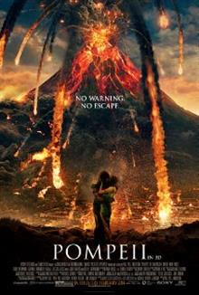
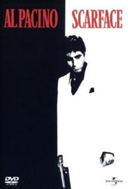
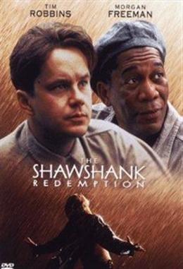
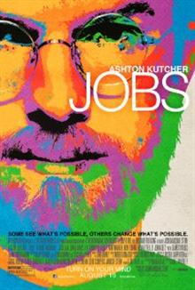
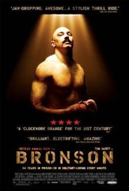

Pompeii / Помпей

Резюме: Действието на “Помпей” се развива в обречения едноименен град,
няколко дни преди изригването на вулкана Везувий. Сюжетът разказва за млад роб,
чието желание е да откупи свободата си, и да се ожени за дъщерята на господаря си.
Но това което той все още не знае е, че тя е принудена да се омъжи за корумпиран римски сенатор,
а вместо свобода, той ще бъде продаден на друг богат земевладелец, намиращ се в Непал.
Scarface / Белязаният

Резюме : Криминален епос и един от най-запомнящите се филми в историята на киното,
пресъздаващ живота на кубинския бежанец Тони Монтана (Ал Пачино).
Тони и неговият приятел Мани Ривера (Стивън Бауър) се преселват в Америка
и започват стъпка по стъпка да се изкачват в йерархията на подземния свят.
След многобройни премеждия дребният мошеник се превръща в един от големите гангстерски босове в Америка.
Със съвместната работа на режисьора Брайън Де Палма, сценариста Оливър Стоун
и неповторимия актьорски талант на Ал Пачино, римейкът на едноименния филм от
1932 година се превръща в образец в криминалния жанр.
The Shawshank Redemption / Изкуплението Шоушенк

Резюме : 40-те г. на 20 век. Анди Дюфрен е млад проспериращ банкер,
чийто живот се променя драматично, когато е обвинен в убийството на жена си и
нейният любовник и е осъден на доживотен затвор...
Куражът на Анди и приятелството му с черноборсаджията на затвора „Ред”
Рединг ще му помогнат да запази надеждата си жива. Това не е филм за отчаянието и самотата.
Не е филм за изолацията. Това е филм за възкресените надежди, за приятелството, за мечтите и
куражът на един мъж.Това е филм за свободата.Изкуплението Шоушенк” (The Shawshank Redemption)
е най-великия филм на всички времена, според проучване на филмовото списание Empire, в което
са взели участие над 20 000 негови читатели.“Хубаво е да си на върха, казва Робинс за класацията.
Причината хората толкова да харесват този филм е, защото в него има много надежда и показва,
че упорството и издържливостта се отплащат.”
jOBS

Резюме: Филмът разглежда живота на известния изобретател и бизнесмен Стийв Джобс от
младежките му години, когато е бил част от хипи-движението и се е отдавал на ежедневие
изпълнено с купони и наркотици, до възхода му като съосновател и изпълнителен директор
на мулти-милионните компании за революционни технологии “Пиксар” и “Епъл”. Въпреки че не
успява да завърши колеж, амбициозния Джобс осъществява мечтите си и благодарение на визията
си за бъдещето и развитието на технологиите той се превръща в един от най-популярните
и уважавани изобретатели на 20-ти век.
Bronson / Бронсън

Резюме : През 1974 година, деветнадесет годишният Майкъл Питърсън решава,
че иска да се прослави, като измайстори собственоръчно направена пушка и
решава да ограби пощенската служба. Набързо арестуван и задържан зад решетките,
Питърсън първоначално е осъден на 7 години, но в последствие излежава тридесет и
четири, тридесет от които в строг тъмничен режим. През това време, Майкъл Питърсън,
побелялото момче, започнало да представя себеси за Чарълз Бронсън, с его, заемащо централно място.
Вътре в мислите на Бронсън - язвителни обвинения към културата на знаменитостите.